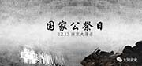

 二战以后，主要参战国政府大多设立国家级哀悼日。用国家公祭的形式来祭奠死难的国民，增强战争灾难历史的记忆，成为国际惯例。 联合国设立：缅怀大屠杀受难者国际纪念日。 2005年第60届联大全体会议一致通过，决定将每年的1月27日定为“国际大屠杀纪念日”。这是为纪念1945年1月27日，苏联军队解放了最大的纳粹死亡集中营波兰奥斯维辛。二战期间，在这里110万人遭纳粹屠杀。也以此反对任何否定纳粹大屠杀历史事实的做法，并要求所有国家教育并帮助下一代了解有关种族屠杀的罪行。 波兰的奥斯威辛集中营大屠杀纪念馆、美国的珍珠港事件纪念馆（目前日方草率的“致歉”）、俄罗斯卫国战争纪念馆、日本的广岛和长崎原爆纪念馆等，每年都举行国家公祭，警示世人 。 公祭之日，国家元首、议会议长、各大党派领袖都到场献花圈，并公开发表讲话，意义深远。 公众的参与度也相当高，参加公祭的人数少则万人以上，多则10多万人，影响广大。 二战以后，主要参战国政府大多设立国家级哀悼日。用国家公祭的形式来祭奠死难的国民，增强战争灾难历史的记忆，成为国际惯例。 联合国设立：缅怀大屠杀受难者国际纪念日。 2005年第60届联大全体会议一致通过，决定将每年的1月27日定为“国际大屠杀纪念日”。这是为纪念1945年1月27日，苏联军队解放了最大的纳粹死亡集中营波兰奥斯维辛。二战期间，在这里110万人遭纳粹屠杀。也以此反对任何否定纳粹大屠杀历史事实的做法，并要求所有国家教育并帮助下一代了解有关种族屠杀的罪行。 波兰的奥斯威辛集中营大屠杀纪念馆、美国的珍珠港事件纪念馆（目前日方草率的“致歉”）、俄罗斯卫国战争纪念馆、日本的广岛和长崎原爆纪念馆等，每年都举行国家公祭，警示世人 。 公祭之日，国家元首、议会议长、各大党派领袖都到场献花圈，并公开发表讲话，意义深远。 公众的参与度也相当高，参加公祭的人数少则万人以上，多则10多万人，影响广大。